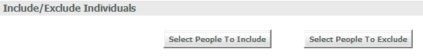
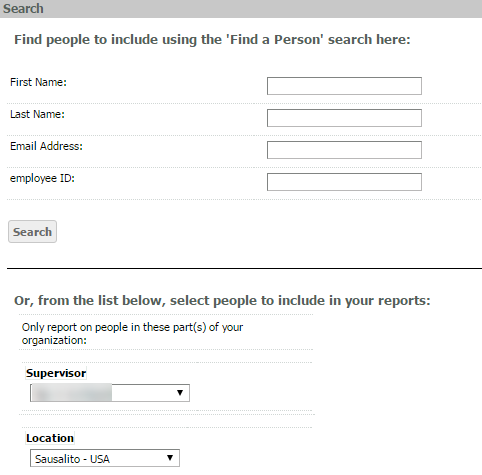
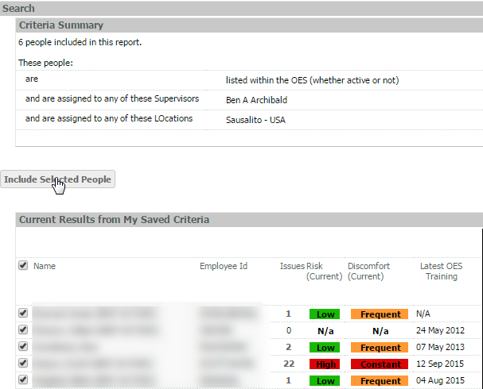
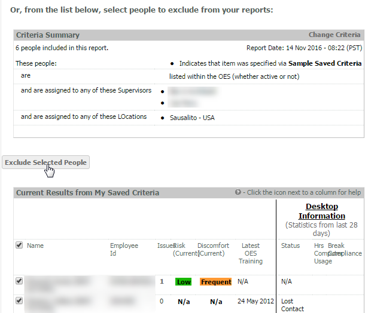

You may include or exclude individuals from your Saved Criteria set by searching for individual users or by searching for HR attribute values.

Note: The Select People to Exclude button does not appear until some criteria has been added to the My Saved Criteria list.
To choose people to include:
Choose Select People to Include.
Use the Find a Person search tool to find a specific user by user account fields or find a group of people according to HR attributes (such as Location).

From the resulting list of names, check the boxes next to the names you want to include and click Include Selected People to add them to your My Saved Criteria list.

To exclude people:
Choose Select People to Exclude.
Users currently included in the Saved Criteria will be displayed at the bottom. Select users to exclude from the list of people currently included in the Saved Criteria filter and click Exclude Selected People.
You can also the Find a Person search tool at the top to find a specific user to exclude by user account fields.

Included or excluded users will be listed at the top of the Saved Criteria's settings.
You may remove entries by checking the box next to the name and clicking Remove Selected Names.